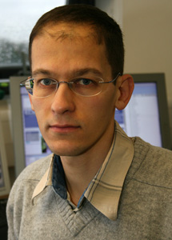

Ivan Markovsky
|  | ICREA Research Professor |
News
January 2023: joining the International Centre for Numerical Methods in Engineering (CIMNE)
Research
My research is in the areas of system theory, signal processing, and control. Its distinct feature is using behavioral approach, developed 40 years ago by Jan C. Willems, see
More specifically, my expertise is in
direct data-driven methods, and
system identification.
Teaching
System identification, 2021–2022
Selected topics in nonlinear system identification, 2018–2022
Linear algebra, 2012–2022
Signal theory, part 1, 2012–2018
ELEC spring school, System identification in the behavioral setting, July, 2017 and 2019
MTNS, mini-course, July, 2014
SOCN, doctoral school course, March 2014
ELEC doctoral school, invited lecture, May 2013
Lego Mindstorms laboratory, 2009–2012
ELEC 3035: Control System Design, 2007–2011
Professional activities
CDC, special session on low-rank approximation, December, 2019
International Journal of Control associate editor, 2007–
38th Benelux Meeting on Systems and Control, organizing committee member, March, 2019
36th Benelux Meeting on Systems and Control, organizing committee member, March, 2017
34th Benelux Meeting on Systems and Control, organizing committee member, March, 2015
SIAM Journal on Matrix Analysis and Applications associate editor, January 2015–December 2017
MTNS, special session, July, 2014
DRWA, working group, September, 2013
ROKS editorial board member, July, 2013
Signal Processing guest editor, October 2007
4th International Workshop on Total Least Squares and Errors-in-Variables Modeling, co-chair, August 2006
Short CV (pdf), Long CV (pdf), list of publications (pdf)